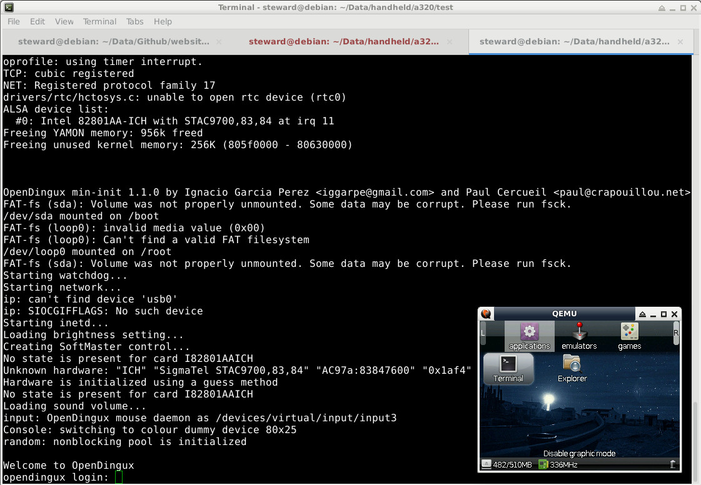

Steward
分享是一種喜悅、更是一種幸福
掌機 - Dingoo A320 - OpenDingux - 如何使用QEMU
參考資訊：
http://www.gcw-zero.com/news.php?id=13
http://prizma.bmstu.ru/~exmortis/posts/2015-04-23-opendingux-qemu.html
步驟如下：
$ cd
$ wget https://github.com/steward-fu/website/releases/download/a320/cc-dx.tar.gz
$ tar xvf cc-dx.tar.gz
$ sudo mv a320 /opt
$ export PATH=/opt/a320/usr/bin/:$PATH
$ cd
$ git clone -b jz-3.16-qemu https://github.com/dmitrysmagin/linux.git
$ cd linux
$ export ARCH=mips
$ make gcw0-qemu_defconfig
$ make
$ cd
$ git clone -b opendingux-2012.11 https://github.com/dmitrysmagin/opendingux-buildroot.git
$ cd opendingux-buildroot
$ make a380_defconfig
$ make
$ cd
$ dd if=/dev/zero of=512M bs=1M count=512
$ sudo mkdosfs 512M
$ sudo mount 512M /mnt/
$ sudo cp rootfs.squashfs /mnt/
$ sudo mkdir /mnt/local /mnt/local/apps /mnt/local/home /mnt/local/etc
$ sudo umount /mnt/
$ sudo apt-get install qemu -y
$ vim run.sh
#!/bin/sh
MACHINE="-M malta -m 256"
FIRMWARE="-kernel vmlinux -hda 512M"
HARDWARE="-sdl -soundhw ac97 -k en-us -rtc clock=vm"
NETWORK="-net nic,model=e1000 -net user"
SERIAL="-serial stdio -monitor none"
qemu-system-mipsel $MACHINE $FIRMWARE $HARDWARE $NETWORK $SERIAL
$ chmod a+x ./run.sh
$ ./run.sh
